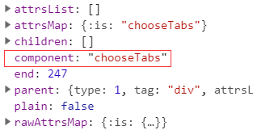

前面花了两节的内容介绍了组件，从组件的原理讲到组件的应用，包括异步组件和函数式组件的实现和使用场景。众所周知，组件是贯穿整个Vue设计理念的东西，并且也是指导我们开发的核心思想，所以接下来的几篇文章，将重新回到组件的内容去做源码分析，首先会从常用的动态组件开始，包括内联模板的原理，最后会简单的提到内置组件的概念，为之后的文章埋下伏笔。
12.1 动态组件
动态组件我相信大部分在开发的过程中都会用到，当我们需要在不同的组件之间进行状态切换时，动态组件可以很好的满足我们的需求，其中的核心是component标签和is属性的使用。
12.1.1 基本用法
例子是一个动态组件的基本使用场景，当点击按钮时，视图根据this.chooseTabs值在组件child1,child2,child3间切换。
// vue
<div id="app">
<button @click="changeTabs('child1')">child1</button>
<button @click="changeTabs('child2')">child2</button>
<button @click="changeTabs('child3')">child3</button>
<component :is="chooseTabs">
</component>
</div>
// js
var child1 = {
template: '<div>content1</div>',
}
var child2 = {
template: '<div>content2</div>'
}
var child3 = {
template: '<div>content3</div>'
}
var vm = new Vue({
el: '#app',
components: {
child1,
child2,
child3
},
methods: {
changeTabs(tab) {
this.chooseTabs = tab;
}
}
})
12.1.2 AST解析
<component>的解读和前面几篇内容一致，会从AST解析阶段说起，过程也不会专注每一个细节，而是把和以往处理方式不同的地方特别说明。针对动态组件解析的差异，集中在processComponent上，由于标签上is属性的存在，它会在最终的ast树上打上component属性的标志。
// 针对动态组件的解析
function processComponent (el) {
var binding;
// 拿到is属性所对应的值
if ((binding = getBindingAttr(el, 'is'))) {
// ast树上多了component的属性
el.component = binding;
}
if (getAndRemoveAttr(el, 'inline-template') != null) {
el.inlineTemplate = true;
}
}
最终的ast树如下：

12.1.3 render函数
有了ast树，接下来是根据ast树生成可执行的render函数，由于有component属性，render函数的产生过程会走genComponent分支。
// render函数生成函数
var code = generate(ast, options);
// generate函数的实现
function generate (ast,options) {
var state = new CodegenState(options);
var code = ast ? genElement(ast, state) : '_c("div")';
return {
render: ("with(this){return " + code + "}"),
staticRenderFns: state.staticRenderFns
}
}
function genElement(el, state) {
···
var code;
// 动态组件分支
if (el.component) {
code = genComponent(el.component, el, state);
}
}
针对动态组件的处理逻辑其实很简单，当没有内联模板标志时(后面会讲),拿到后续的子节点进行拼接，和普通组件唯一的区别在于，_c的第一个参数不再是一个指定的字符串，而是一个代表组件的变量。
// 针对动态组件的处理
function genComponent (
componentName,
el,
state
) {
// 拥有inlineTemplate属性时，children为null
var children = el.inlineTemplate ? null : genChildren(el, state, true);
return ("_c(" + componentName + "," + (genData$2(el, state)) + (children ? ("," + children) : '') + ")")
}
12.1.4 普通组件和动态组件的对比
其实我们可以对比普通组件和动态组件在render函数上的区别，结果一目了然。
普通组件的render函数
"with(this){return _c('div',{attrs:{"id":"app"}},[_c('child1',[_v(_s(test))])],1)}"
动态组件的render函数
"with(this){return _c('div',{attrs:{"id":"app"}},[_c(chooseTabs,{tag:"component"})],1)}"
简单的总结，动态组件和普通组件的区别在于：
ast阶段新增了component属性，这是动态组件的标志- 产生
render函数阶段由于component属性的存在，会执行genComponent分支，genComponent会针对动态组件的执行函数进行特殊的处理，和普通组件不同的是，_c的第一个参数不再是不变的字符串，而是指定的组件名变量。 render到vnode阶段和普通组件的流程相同，只是字符串换成了变量，并有{ tag: 'component' }的data属性。例子中chooseTabs此时取的是child1。
有了render函数，接下来从vnode到真实节点的过程和普通组件在流程和思路上基本一致，这一阶段可以回顾之前介绍组件流程的分析
12.1.5 疑惑
由于自己对源码的理解还不够透彻,读了动态组件的创建流程之后，心中产生了一个疑问，从原理的过程分析，动态组件的核心其实是is这个关键字，它在编译阶段就以component属性将该组件定义为动态组件，而component作为标签好像并没有特别大的用途，只要有is关键字的存在，组件标签名设置为任意自定义标签都可以达到动态组件的效果？(componenta, componentb)。这个字符串仅以{ tag: 'component' }的形式存在于vnode的data属性存在。那是不是说明，所谓动态组件只是由于is的单方面限制？那component标签的意义又在哪里？(求教大佬！！)
12.2 内联模板
由于动态组件除了有is作为传值外，还可以有inline-template作为配置,借此前提，刚好可以理清楚Vue中内联模板的原理和设计思想。Vue在官网有一句醒目的话，提示我们inline-template 会让模板的作用域变得更加难以理解。因此建议尽量使用template选项来定义模板，而不是用内联模板的形式。接下来，我们通过源码去定位一下所谓作用域难以理解的原因。
我们先简单调整上面的例子，从使用角度上入手：
// html
<div id="app">
<button @click="changeTabs('child1')">child1</button>
<button @click="changeTabs('child2')">child2</button>
<button @click="changeTabs('child3')">child3</button>
<component :is="chooseTabs" inline-template>
<span>{{test}}</span>
</component>
</div>
// js
var child1 = {
data() {
return {
test: 'content1'
}
}
}
var child2 = {
data() {
return {
test: 'content2'
}
}
}
var child3 = {
data() {
return {
test: 'content3'
}
}
}
var vm = new Vue({
el: '#app',
components: {
child1,
child2,
child3
},
data() {
return {
chooseTabs: 'child1',
}
},
methods: {
changeTabs(tab) {
this.chooseTabs = tab;
}
}
})
例子中达到的效果和文章第一个例子一致，很明显和以往认知最大的差异在于，父组件里的环境可以访问到子组件内部的环境变量。初看觉得挺不可思议的。我们回忆一下之前父组件能访问到子组件的情形，从大的方向上有两个:
1. 采用事件机制，子组件通过$emit事件，将子组件的状态告知父组件，达到父访问子的目的。
2. 利用作用域插槽的方式，将子的变量通过props的形式传递给父，而父通过v-slot的语法糖去接收，而我们之前分析的结果是，这种方式本质上还是通过事件派发的形式去通知父组件。
之前分析过程也有提过父组件无法访问到子环境的变量，其核心的原因在于： 父级模板里的所有内容都是在父级作用域中编译的；子模板里的所有内容都是在子作用域中编译的。 那么我们有理由猜想，内联模板是不是违背了这一原则，让父的内容放到了子组件创建过程去编译呢？我们接着往下看：
回到ast解析阶段，前面分析到，针对动态组件的解析，关键在于processComponent函数对is属性的处理，其中还有一个关键是对inline-template的处理，它会在ast树上增加inlineTemplate属性。
// 针对动态组件的解析
function processComponent (el) {
var binding;
// 拿到is属性所对应的值
if ((binding = getBindingAttr(el, 'is'))) {
// ast树上多了component的属性
el.component = binding;
}
// 添加inlineTemplate属性
if (getAndRemoveAttr(el, 'inline-template') != null) {
el.inlineTemplate = true;
}
}
render函数生成阶段由于inlineTemplate的存在，父的render函数的子节点为null,这一步也决定了inline-template下的模板并不是在父组件阶段编译的,那模板是如何传递到子组件的编译过程呢？答案是模板以属性的形式存在，待到子实例时拿到属性值
function genComponent (componentName,el,state) {
// 拥有inlineTemplate属性时，children为null
var children = el.inlineTemplate ? null : genChildren(el, state, true);
return ("_c(" + componentName + "," + (genData$2(el, state)) + (children ? ("," + children) : '') + ")")
}
我们看看最终render函数的结果，其中模板以{render: function(){···}}的形式存在于父组件的inlineTemplate属性中。
"_c('div',{attrs:{"id":"app"}},[_c(chooseTabs,{tag:"component",inlineTemplate:{render:function(){with(this){return _c('span',[_v(_s(test))])}},staticRenderFns:[]}})],1)"
最终vnode结果也显示，inlineTemplate对象会保留在父组件的data属性中。
// vnode结果
{
data: {
inlineTemplate: {
render: function() {}
},
tag: 'component'
},
tag: "vue-component-1-child1"
}
有了vnode后，来到了关键的最后一步，根据vnode生成真实节点的过程。从根节点开始，遇到vue-component-1-child1，会经历实例化创建子组件的过程，实例化子组件前会先对inlineTemplate属性进行处理。
function createComponentInstanceForVnode (vnode,parent) {
// 子组件的默认选项
var options = {
_isComponent: true,
_parentVnode: vnode,
parent: parent
};
var inlineTemplate = vnode.data.inlineTemplate;
// 内联模板的处理，分别拿到render函数和staticRenderFns
if (isDef(inlineTemplate)) {
options.render = inlineTemplate.render;
options.staticRenderFns = inlineTemplate.staticRenderFns;
}
// 执行vue子组件实例化
return new vnode.componentOptions.Ctor(options)
}
子组件的默认选项配置会根据vnode上的inlineTemplate属性拿到模板的render函数。分析到这一步结论已经很清楚了。内联模板的内容最终会在子组件中解析，所以模板中可以拿到子组件的作用域这个现象也不足为奇了。
12.3 内置组件
最后说说Vue思想中的另一个概念，内置组件，其实vue的官方文档有对内置组件进行了列举，分别是component, transition, transition-group, keep-alive, slot，其中<slot>我们在插槽这一节已经详细介绍过，而component的使用这一节也花了大量的篇幅从使用到原理进行了分析。然而学习了slot,component之后，我开始意识到slot和component并不是真正的内置组件。内置组件是已经在源码初始化阶段就全局注册好的组件。而<slot>和<component>并没有被当成一个组件去处理，因此也没有组件的生命周期。slot只会在render函数阶段转换成renderSlot函数进行处理，而component也只是借助is属性将createElement的第一个参数从字符串转换为变量，仅此而已。因此重新回到概念的理解，内置组件是源码自身提供的组件，所以这一部分内容的重点，会放在内置组件是什么时候注册的，编译时有哪些不同这两个问题上来。这一部分只是一个抛砖引玉，接下来会有两篇文章专门详细介绍keep-alive，transition, transition-group的实现原理。
12.3.1 构造器定义组件
Vue初始化阶段会在构造器的components属性添加三个组件对象,每个组件对象的写法和我们在自定义组件过程的写法一致，有render函数，有生命周期，也会定义各种数据。
// keep-alive组件选项
var KeepAlive = {
render: function() {}
}
// transition 组件选项
var Transition = {
render: function() {}
}
// transition-group 组件选项
var TransitionGroup = {
render: function() {},
methods: {},
···
}
var builtInComponents = {
KeepAlive: KeepAlive
};
var platformComponents = {
Transition: Transition,
TransitionGroup: TransitionGroup
};
// Vue构造器的选项配置，compoents选项合并
extend(Vue.options.components, builtInComponents);
extend(Vue.options.components, platformComponents);
extend方法我们在系列的开头，分析选项合并的时候有说过，将对象上的属性合并到源对象中，属性相同则覆盖。
// 将_from对象合并到to对象，属性相同时，则覆盖to对象的属性
function extend (to, _from) {
for (var key in _from) {
to[key] = _from[key];
}
return to
}
最终Vue构造器拥有了三个组件的配置选项。
Vue.components = {
keepAlive: {},
transition: {},
transition-group: {},
}
12.3.2 注册内置组件
仅仅有定义是不够的。组件需要被全局使用还得进行全局的注册，这其实在选项合并章节已经阐述清楚了。Vue实例在初始化过程中，最重要的第一步是进行选项的合并，而像内置组件这些资源类选项会有专门的选项合并策略，最终构造器上的组件选项会以原型链的形式注册到实例的compoonents选项中(指令和过滤器同理)。
// 资源选项
var ASSET_TYPES = [
'component',
'directive',
'filter'
];
// 定义资源合并的策略
ASSET_TYPES.forEach(function (type) {
strats[type + 's'] = mergeAssets; // 定义默认策略
});
function mergeAssets (parentVal,childVal,vm,key) {
var res = Object.create(parentVal || null); // 以parentVal为原型创建一个空对象
if (childVal) {
assertObjectType(key, childVal, vm); // components,filters,directives选项必须为对象
return extend(res, childVal) // 子类选项赋值给空对象
} else {
return res
}
}
关键的两步一个是var res = Object.create(parentVal || null);，它会以parentVal为原型创建一个空对象，最后是通过extend将用户自定义的component选项复制到空对象中。选项合并之后，内置组件也因此在全局完成了注册。
{
components: {
child1,
__proto__: {
keepAlive: {},
transition: {},
transitionGroup: {}
}
}
}
最后我们看看内置组件对象中并没有template模板，而是render函数，除了减少了耗性能的模板解析过程，我认为重要的原因是内置组件并没有渲染的实体。最后的最后，让我们一起期待后续对keep-alive原理分析，敬请期待。